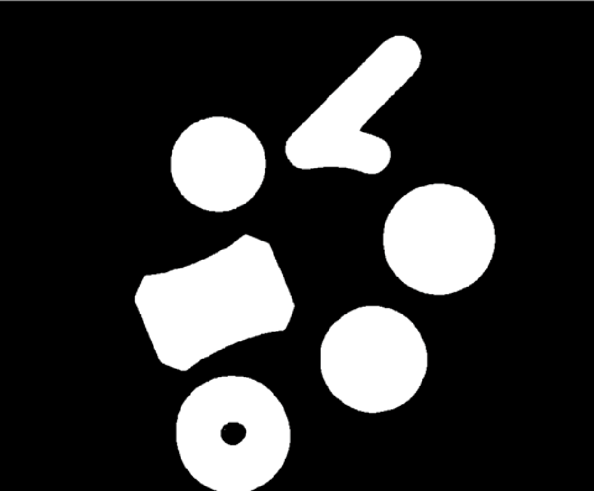
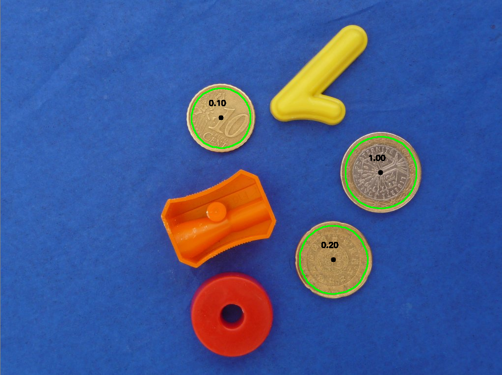
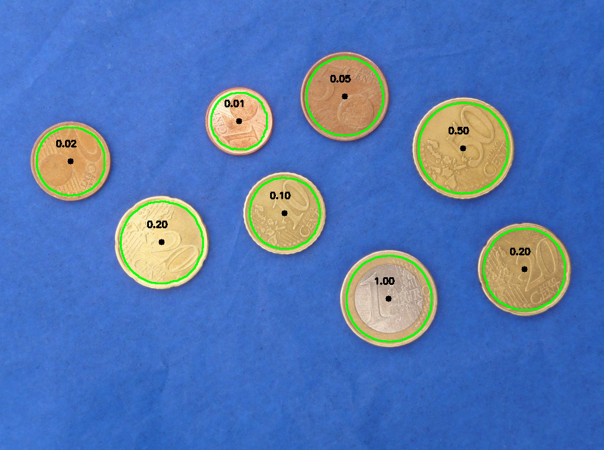

O objetivo deste projeto era a realização de um programa que conseguisse, num conjunto de fotos com condições especificas, câmara paralela à mesa, distancia sempre igual entre outros, detetar, de todos os objetos em cima da mesa, aqueles que eram moedas, bem como classificar o seu valor de cêntimos.
A primeira figura demonstra a imagem que o programa irá tentar detetar e classificar as moedas.

Para atingir tal objetivo foi realizado um processo que se divide em várias etapas, a primeiro Aquisição e pré-processamento das imagens onde se tratou de remover informação supérflua, neste caso foi encontrar o valor Hue, no modelo HSV, dá cor de fundo para se remover esta das máscaras a realizar na segunda fase.
A segunda fase, segmentação, tem como função a criação de máscaras binárias para isolar os objetos presentes em cima da mesa.
A figura seguinte é uma máscara binária da fotografia onde a preto está o valor hue do azul da mesa, o qual foi removido na criação destas máscaras.
A terceira fase foi a extração de características, esta tem por objetivo extrair características referentes á cor dos objetos em cima da mesa, bem como características referentes à forma ou shape de cada um desses objetos.
A fase final é a classificação das moedas, para todos os objetos que, pela fase anterior, demonstram características de serem uma moeda, estes agora foram classificados com os seus respetivos valores.
Resultados:
 Como podemos observar pelas figuras anteriores o programa conseguiu classificar todas as moedas corretamente e evitar classificar objetos que não eram moedas.